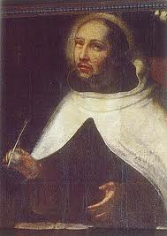
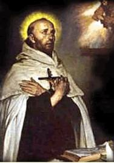
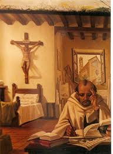
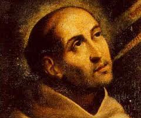

IDEAL SACERDOTAL
NASCIMENTO E FAM�LIA
Nasceu no dia 24 de Junho de
1542 em Fontiveros, uma pequena cidade do interior da Espanha, com extensas
e ensolaradas plan�cies, entre as cidades de �vila e Salamanca. Era 
Nasceram tr�s filhos: Francisco, Luis e Jo�o (seu nome completo era Juan de Yepes �lvares). Estavam vivendo praticamente na mis�ria, em virtude da falta de trabalho. N�o ganhavam o suficiente para sobreviver e o resultado logo apareceu com a morte do pai, e logo a seguir, com a morte do filho Luis. Jo�o que foi o �ltimo, sendo mal alimentado em consequ�ncia das dificuldades da fam�lia, ficou desnutrido, franzino e de baixa estatura.
A vi�va abandonou o povoado com os dois filhos e foi pedir ajuda aos ricos familiares do marido, mendigando trabalho ou sustento. N�o conseguiu nada, negaram-lhe at� o menor aux�lio, Ent�o, ela foi obrigada a se aventurar em outras regi�es, primeiro em Ar�valo e, quando Jo�o estava com 9 anos de idade, mudou-se para Medina Del Campo.
Em Medina, ela colocou o filho no Col�gio da Catequese ou da Doutrina para crian�as �rf�s, para apreender a ler e a escrever. Jo�o se dedicou perseverantemente e em pouco tempo, lia e escrevia correntemente. A administra��o do Col�gio exigia alguns pequenos servi�os das crian�as, objetivando estimular o reconhecimento pessoal pelo ensino que cada um recebia gratuitamente. Jo�o foi colocado como coroinha na celebra��o da Santa Missa,
Em seguida, sua m�e conseguiu e ele foi enviado para o Mosteiro da Penit�ncia, era o nome do Mosteiro de Santa Madalena, com o objetivo de servir a Igreja e continuar como auxiliar na celebra��o da Santa Missa.
Embora, com toda boa vontade atendendo a sua m�ezinha, que tamb�m queria que ele realizasse trabalhos manuais como: carpinteiro, alfaiate, entalhador e pintor, Jo�o n�o evoluiu nestas profiss�es, n�o revelou tend�ncia para executar aqueles trabalhos, e por isso desistiu.
Pouco tempo depois, com licen�a da m�e, foi levado pelo senhor Alonso Alvarez Toledo para um Hospital. O senhor Alonso era um homem rico e muito piedoso, que abandonara o mundo e se recolhera ao Hospital de Nuestra Se�ora de la Concepci�n de Medina del Campo, onde morava e trabalhava servindo os pobres. Ali, o senhor Alonso o incumbiu de pedir auxilio e ajuda para os mais necessitados. O seu empenho e dedica��o foram t�o significativos que Jo�o angariou a simpatia e amizade do senhor Alonso e de todas as pessoas do Hospital.
E assim, deram-lhe licen�a para ouvir as li��es de gram�tica, no Col�gio da Companhia de Jesus. O diretor da entidade era o Padre Bonif�cio que come�ou admirar o interesse de Jo�o e o ajudava a entender e avan�ar nos estudos.
E foi justamente a partir desta �poca, que come�aram a despertar no jovem, tr�s qualidades excepcionais: a religiosidade, o amor e o servi�o aos doentes, e a dedica��o aos estudos. Protegido pela gra�a Divina, aqueles que viviam ao seu redor e percebiam as suas primorosas qualidades lhe ofereciam oportunidades concretas para que ele pudesse desenvolver e cultivar as melhores virtudes.
Dos 17 aos 21 anos frequentou o Col�gio dos Jesu�tas, sem deixar o servi�o no Hospital. Utilizava todo o tempo que dispunha para estudar, apreendendo as suas li��es e mantendo-se em dia com todos os assuntos.
IDEAL CARMELITA

Mas, o fato em si, causou certa perplexidade, em raz�o de existirem dois convites e press�es vivas e permanentes sobre ele, vindo de outras dire��es: uma do Hospital, que admirando as suas qualidades, queria que ele se ordenasse sacerdote e continuasse como Capel�o servindo ao Hospital; a outra, vinha dos Jesu�tas, que apreciando os seus dotes intelectuais, assim como a sua profunda piedade, queria mant�-lo na Ordem.
Mas na verdade, intimamente Jo�o j� tinha feito a sua escolha, por que lhe atra�a e cativava, o esp�rito contemplativo e a piedade mariana dos Carmelitas. Por isso mesmo, com naturalidade agradeceu o interesse e os convites dos outros, mas permaneceu no seu ideal.
No Noviciado, encontrou efetivamente meio e o ambiente adequado para assimilar o precioso conte�do daquela tradi��o espiritual. Em 1564 fez a Profiss�o de F�, recebendo o nome de Frei Jo�o de S�o Matias.
E logo a seguir, mudou-se para Salamanca, a fim de cursar a Universidade, fazendo os estudos de filosofia e teologia. Ficou instalado no Convento Carmelita de Santo Andr�. E como sempre, despertou nos irm�os intensa admira��o, por sua piedade, por sua vida penitente e sua not�vel capacidade para os estudos.
Acontece que, a admira��o causada pelo brilho de suas virtudes pessoais come�ou a deix�-lo profundamente insatisfeito. Jo�o entrou numa terr�vel crise! N�o uma crise de f� e de abandono da sua espiritualidade, mas uma crise de desconforto, em face do novo ambiente em que estava vivendo. Naquele ambiente acad�mico, somente de estudos, os jovens eram convidados a buscar proje��o, t�tulos e promo��es, ferindo o seu sentimento, que gostava do sil�ncio e almejava um ambiente conventual mais contemplativo, mais dedicado a leitura e as ora��es. O certo � que, depois de ter vivido um Noviciado sereno no Carmelo, agora na Universidade, entrava numa profunda depress�o e ent�o, decidiu buscar outra solu��o para a sua vida, e come�ou a pensar seriamente em entrar na Cartuxa.

A Ordem Cartuxa � considerada a mais severa da Igreja Cat�lica. � uma ordem semi-erem�tica de clausura mon�stica e de orienta��o puramente contemplativa. Foi fundada no dia 15 de Agosto de 1084, Festa da Assun��o de NOSSA SENHORA aos C�us, por S�o Bruno e seus seis companheiros. Os fundadores escolheram uma montanha ao norte de Grenoble Chartreuse, na Fran�a, onde constru�ram o seu Mosteiro, conhecido pelo nome de Mosteiro da �Grand Chartreuse� (a Grande Cartuxa).

CAMINHO DA VOCA��O
No ano de 1567 ele cursava o terceiro
ano na Universidade, quando o desacerto vocacional alcan�ou um grau mais elevado em
seu esp�rito. Nesta �poca ele vivia no Convento de 
Em Setembro ou Outubro do mesmo ano, encontrou-se casualmente com Santa Teresa D��vila (Madre Teresa de Jesus), em Medina. Frei Jo�o ficou muito impressionado com o entusiasmo e o not�vel projeto de vida apresentado por ela. Teresa tinha 52 anos de idade e bastante experi�ncia no ambiente crist�o, que a transformou numa pessoa aberta e decidida, nas realiza��es e iniciativas. Frei Jo�o tinha apenas 25 anos de idade, estava rec�m ordenado sacerdote, era t�mido e inexperiente. Por seu lado, Madre Teresa lhe ofereceu um novo caminho, um projeto de vida comprovado e sugestivo, e comprometeu-se a lhe proporcionar todos os meios para ele alcan�ar os seus objetivos. Mas exigiu em troca, muita espiritualidade, compromisso firme e uma ampla capacidade de sacrif�cio. Frei Jo�o vibrou com uma imensa alegria interior, pois estava disposto a tudo, j� era experimentado na ora��o e na penit�ncia, na ci�ncia e na bondade. Por isso, assumiu todas as implica��es e inc�modos de um come�o, e fraternalmente imp�s a Madre apenas uma condi��o: �a de que este projeto n�o demorasse muito�.
Na verdade, o projeto de Madre Teresa era fazer a Reforma do Carmelo, e com este objetivo, convidou Frei Jo�o com suas reconhecidas qualidades espirituais a participar. Ela queria a Ordem mais contemplativa, mais dedicada �s ora��es e ao estudo b�blico, ao exerc�cio das penit�ncias mais severas, dilatando as possibilidades, para que o esp�rito fosse mais cultivado e acionado numa intensa e fervorosa busca de DEUS. Assim, com o pacto estabelecido, os dois come�aram a Reforma do Carmelo entre os religiosos.
EM DURUELO
O lugar escolhido para come�arem a elaborar os planos e as normas para a Reforma, foi o lugarejo de Duruelo, onde existia um grupinho de casas entre pinherais, n�o longe de Fontiveros. Inauguraram os trabalhos no primeiro domingo do Advento, e mais precisamente no dia 28 de Novembro de 1568. E o tema central a ser discutido e aperfei�oado era o esp�rito da Reforma: determinando ritmo intenso de ora��o, austeridade de vida, estilo de fraternidade e recrea��o, e tamb�m, moderada atividade pastoral. Trataram ainda de assuntos materiais: a casa, o h�bito, os hor�rios a serem observados, e o sustento de todos. E fundaram em Duruelo o primeiro Convento Carmelita Descal�o para homens.
A Comunidade dos �Carmelitas Descal�os� foi formada por Madre Teresa, Frei Jo�o e dois outros religiosos vindos tamb�m do antigo Carmelo: Padre Antonio de Jesus e Frei Jos� de Cristo. Ao renovar a Profiss�o de F�, Frei Jo�o de S�o Matias decidiu adotar o nome de �Frei Jo�o da Cruz�.
A vida em Duruelo corresponde ao projeto que elaboraram, firme, decidida e atenciosa, ultrapassando ligeiramente as previs�es de Madre Teresa, em mat�ria de Ora��o e Penit�ncia. Fizeram tamb�m um pacto de sil�ncio, pelo qual se comprometeram a n�o falar da experi�ncia de Duruelo a ningu�m (das gra�as recebidas, servi�os prestados, sacrif�cios), nem para os contempor�neos e nem para a posteridade.
Desde o in�cio ficou bem definida a miss�o de Jo�o: ser o mestre dos novi�os, formador espiritual e mistagogo (iniciador dos ne�fitos nos Mist�rios) do Carmelo teresiano. Dos dez anos que se dedicou ao trabalho, cinco anos aplicou na forma��o dos Carmelitas Descal�os e outros cinco anos na forma��o das Monjas Carmelitas. Depois organizou o Noviciado de Pastrana. Em Abril 1571 foi nomeado Reitor do primeiro Col�gio da Reforma, em Alcal� de Henares. A convite de Madre Teresa, em Maio de 1572 mudou-se para �vila, como Vig�rio e Confessor das Monjas do Mosteiro da Encarna��o, nome escolhido por Santa Teresa D��vila, que era a Priora desde o ano anterior. Nesta ocasi�o ele completou 30 anos de idade.
� tamb�m nesta oportunidade que o conv�vio entre os dois chefes reformadores (Jo�o e Teresa) se tornou mais profundo e cont�nuo. Um mesmo projeto de vida e de voca��o, de amizade e de servi�o, unindo estes dois mestres da m�stica crist�: t�o semelhantes e t�o complementares.
Durante este per�odo, no seio da Ordem do Carmelo se agravaram os conflitos jurisdicionais entre os Carmelitas Cal�ados e os Carmelitas Descal�os, devido aos distintos enfoques espirituais referentes a Reforma. Por outro lado, al�m das diverg�ncias dentro da Comunidade Religiosa, avultava tamb�m a confronta��o entre o poder da Realeza e o poder Pontif�cio, com a inten��o de dominar o setor das Ordens Religiosas. Assim, em 1575, o Cap�tulo Geral dos Carmelitas decidiu enviar um visitador da Ordem para suprimir os Conventos fundados sem licen�a do Comando Geral da Ordem, ou seja, os Conventos fundados pelos "Reformadores", e de colocar reclusa num Convento, Madre Teresa de Jesus.
PROBLEMAS EM TOLEDO

Este tipo de castigo era denominado de �C�rcere Conventual�, no qual um religioso era designado �Carcereiro�, encarregado de vigiar, trazer a comida e acompanhar o preso, quando o mesmo tivesse que aparecer em p�blico.
Consciente de todas as dificuldades que teria de enfrentar, colocou tudo nas m�os de DEUS, e dizia: �Estas coisas n�o s�o feitas pela for�a dos homens, mas pela permiss�o de DEUS, que sabe o que nos conv�m, o que � melhor para n�s e as determina para o nosso bem�.
Com o castigo em pleno andamento, l� pelo m�s de Maio ou Junho, mudaram o carcereiro, que passou a se mostrar mais benigno e amig�vel. Um dia, Padre Jo�o lhe pediu: ... �que lhe fizesse a caridade de lhe arranjar um pouco de papel e tinta, porque queria escrever algumas coisas devocionais para se entreter�. Foi-lhe trazido o que pediu. Ent�o escreveu o poema do �C�ntico Espiritual�, a �Fonte� e os �Romances�. Coisas devocionais e de entretenimento! Que palavras humildes e modestas! Na verdade, uma obra admir�vel, com o mais elevado lirismo espanhol!
Suportou heroicamente o castigo e nas oportunidades sempre afirmava: �que as gra�as que recebia compensavam com vantagem, os sofrimentos da pris�o�. Portando-se com dignidade, em suas horas de solid�o, escolheu o melhor momento para preparar a sua fuga, sem despertar qualquer suspeita. N�o podia pedir aux�lio e nem a ajuda de ningu�m, pois estava totalmente incomunic�vel. Assim sendo, tinha que se decidir e agir por sua pr�pria conta e risco. Esperou o momento certo. Numa noite entre os dias 16 e 18 de Maio de 1578, arrancou o ferrolho da porta e rasgou o pr�prio manto em muitas tiras, emendou-as e desceu por uma janela. Saltou o muro que separa o precip�cio do Rio Tejo, e fugiu para um local desconhecido. Fazendo perguntas aos transeuntes, chegou ao Convento das Carmelitas Descal�as, que o esconderam durante algumas horas e depois, o encaminharam a um benfeitor da Comunidade Religiosa, onde ele permaneceu se restabelecendo e se preparando para viajar. Com a interven��o de Madre Teresa que tinha muita amizade com a Duquesa Alba, refugiou-se no Mosteiro de Ja�n e se preparou a fim de poder continuar com sua miss�o.